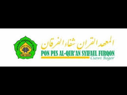

PONDOK PESANTREN SYIFAUL FURQON
Pondok pesantren al Qur'an syifaul furqon merupakan salah satu tempat di mana saya mulai memahami Apa itu agama,disitu saya mendapatkan teman yang sama seperti saya dengan segala kekurangan.dan disitulah saya memulai dari Nol untuk memahami apa saja yang ada di dalam Agama islam,Meskipun saya pulang tidak bisa membawa semua yang telah di ajarkan oleh seorang Guru,,tapi saya sudah sangat bersyukur karena mendapatkan seorang guru yang sangat sabar.